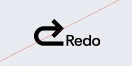

Redo
This guide defines the visual language, design style, and principles that shape a clear and consistent brand experience, no matter the team or area of expertise.
At its core, Redo is about precision and clarity—just like our mission to correct financial errors and optimize balance sheets. This guide lays out the essential design standards that bring our brand to life, from our color system and typography to accessibility benchmarks and documentation.
Whether you're designing for digital platforms or printed materials, these guidelines ensure every touchpoint reflects the trust and efficiency at the heart of Redo.
This guide defines the visual language, design style, and principles that shape a clear and consistent brand experience, no matter the team or area of expertise.
At its core, Redo is about precision and clarity—just like our mission to correct financial errors and optimize balance sheets. This guide lays out the essential design standards that bring our brand to life, from our color system and typography to accessibility benchmarks and documentation.
Whether you're designing for digital platforms or printed materials, these guidelines ensure every touchpoint reflects the trust and efficiency at the heart of Redo.
Contents
01Brand Strategy
02Personality
03Logo
04Color
05Typography
06Art Direction
01Brand Strategy
In the world of finance, mistakes happen—miscalculations, overlooked expenses, inefficiencies that silently erode profitability. Businesses lose money not because they aren’t earning, but because errors go unchecked.
Redo restores confidence in financial numbers.
In the world of finance, mistakes happen—miscalculations, overlooked expenses, inefficiencies that silently erode profitability. Businesses lose money not because they aren’t earning, but because errors go unchecked.
Born from the need for financial clarity, Redo was founded on a simple yet powerful mission: to correct financial errors and optimize balance sheets. We believe that precision is the key to profitability, and that businesses shouldn’t be held back by avoidable losses. With advanced technology and expert analysis, we uncover discrepancies, eliminate inefficiencies, and restore confidence in the numbers that drive success.
At Redo, we don’t just fix mistakes—we empower businesses to move forward with accuracy and efficiency. Because when the numbers are right, the future looks even brighter.
02Personality
Redo’s voice brings our brand to life through the words we write and speak. The way we communicate with customers has the power to transform their financial well-being. Through clear and intentional language, we make financial corrections simple, accessible, and stress-free. Our direct, approachable, and transparent voice ensures that fixing mistakes feels effortless—so our customers can move forward with confidence. Redo’s voice brings our brand to life through the words we write and speak. The way we communicate with customers has the power to transform their financial well-being. Through clear and intentional language, we make financial corrections simple, accessible, and stress-free. Our direct, approachable, and transparent voice ensures that fixing mistakes feels effortless—so our customers can move forward with confidence. Redo’s voice brings our brand to life through the words we write and speak. The way we communicate with customers has the power to transform their financial well-being. Through clear and intentional language, we make financial corrections simple, accessible, and stress-free. Our direct, approachable, and transparent voice ensures that fixing mistakes feels effortless—so our customers can move forward with confidence.
Tone & Voice
Our Vision: why we exist
Our Mission: what we do
Our Promise: how we help
Sample copy
Your Finances, Fixed the Right Way
We Handle the Fix, You Focus on What Matters
Mistakes Don’t Have to Cost You—We’ve Got Your Back
See an Error? We’ll Make It Right.
03Logo
The Redo logo is a sleek, modern arrow that curves backward, symbolizing the power to rewind, correct, and optimize financial decisions. The reversed motion represents our core mission—helping businesses go back, fix errors, and recover lost value.
Designed with clean, sharp lines, the arrow conveys precision and efficiency, while its fluid motion suggests agility and adaptability in financial correction. The color palette reinforces trust and clarity—deep blues or greens for stability, complemented by bold accents to signify action and resolution.
More than just a symbol, the Redo logo embodies our commitment to turning financial missteps into opportunities for growth—because tin business, every mistake deserves a second chance.
Primary Lockup
.jpg)
Clearspace
.jpg)
Secondary Lockups
.jpg)
Incorrect Usage

 Do not resize the
mark
Do not resize the
mark
 Do not rotate the
logo
Do not rotate the
logo
 Do not change the
color of the mark alone
Do not change the
color of the mark alone
 Do not outline
the logo
Do not outline
the logo
 Do not reverse
the lockup
Do not reverse
the lockup
 Do not add
gradients the logo
Do not add
gradients the logo